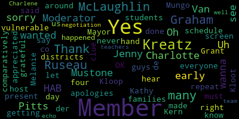
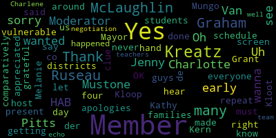

total time: 30.41 minutes
total words: 895
{kind=link}
total time: 0.64 minutes
total words: 116

total time: 1.6 minutes
total words: 218

{kind=link}
total time: 0.39 minutes
total words: 66
{kind=link}
total time: 0.68 minutes
total words: 108
[Lungo-Koehn]: Paranormal dog talk. Adorable. Yeah, we're loving her.
[Van der Kloot]: That's great.
[Lungo-Koehn]: I rile her up in the morning and then try to get her not to bite me.
[Van der Kloot]: You have any scars yet?
[Lungo-Koehn]: My son does has has some because he put yeah messes around but those little puppy teeth. All right. Looks like we're recording. It's 5.03. Please be advised that on Wednesday, February 3rd, 2021 at 5 p.m. there will be a special school committee meeting held through remote participation pursuant to Governor Baker's March 12th, 2020 order suspending certain provisions of the open meeting law, chapter 38, section 18, and the Governor's March 15th, 2020 order imposing strict limitations of the number of people that may gather in one place. This meeting of the Medford School Committee will be conducted via remote participation to the greatest extent possible. Specific information The general guidelines for remote participation by members of the public and or parties with the right and a requirement to attend this meeting can be found on the city of Medford website at www.medfordma.org. For this meeting, members of the public wish to listen or watch the meeting may do so by accessing the meeting link contained herein. No in-person attendance member of the public will be permitted, but every effort will be made to ensure that the public can adequately access the proceedings in real time via technological means. In the event that we are unable to do so, despite best efforts, we will post on the city of Medford or Medford community media websites, an audio or video recording, transcript or other comprehensive record proceedings as soon as possible after the meeting. Since the meeting will be held remotely, participants can log or call in by using the following link or calling number. 1-929-205-6099. Please enter meeting ID 91451. 775527 when prompted. Additionally, comments or questions can be submitted during the meeting by emailing medfordsc at medford.k12.ma.us. Those submitting must include the following information, your first and last name, your Medford Street address, your question or comment. While it is possible to submit questions via the Zoom software, we are strongly recommending that you use the email above while we gain familiarity with hosting our meetings online. The agenda will be as follows, a negotiation in legal matters, executive session to discuss recommendation to approve the memorandum of agreement between the Medford Public Schools and the Medford Teachers Association governing working conditions for 2020-2021 school year, a tentative agreement of which was reached on January 23rd, 2021. Sincerely, Dr. Marice Edouard-Vincent, Superintendent of Schools. So if there's a motion to enter executive session. Motion to enter executive session by member McLaughlin, seconded by member Kreatz, roll call. Oh, member Ruseau.
[Murphy]: I think we have to take attendance before we can do that.
[Lungo-Koehn]: Member McLaughlin, sorry.
[McLaughlin]: Thank you, yes. Kathy Kreatz, member Kreatz? Here, here. Member Graham?
[Graham]: Yes, here.
[McLaughlin]: Melanie McLaughlin here. Uh, member must own their member Ruseau. Hasn't never been to clue present.
[Lungo-Koehn]: Mayor Lungo-Koehn present seven present and absent. We're all here. Yep. Motion to enter executive session by member McLaughlin, seconded by member Kreatz. Roll call.
[McLaughlin]: Uh, member Kreatz here. Yes, member Graham. You guys see Jenny at my screen? I can't see her.
[Charlene Douglas]: I can see her.
[McLaughlin]: Jenny, can you hear? My apologies. I had not made her a co-host. That's on me. OK. Member Grant? Yes. Yes. Member McLaughlin? Yes. Member Mustone? Yes. Member Ruseau? Yes. Member Van de Kloop?
[Lungo-Koehn]: Yes.
[McLaughlin]: Mayor Mungo-Kern?
[Lungo-Koehn]: Yes. So having the affirmative zero negative, we can now enter executive session.
[Van der Kloot]: Would you be coming out and back in public, Mayor?
[Lungo-Koehn]: We'll be coming back out in public to adjourn and to report anything out that we choose. Thank you everybody for your patience. We are recording, we are out of executive session and we did take a vote. I'm gonna turn it over to Mr. Murphy to give a brief summary for those who are watching of the memorandum of agreement and then we will announce the vote.
[Murphy]: Thank you, mayor. As the mayor said, the school committee tonight in executive session was considering tentative agreement that was reached between the Medford Teachers Association and the Medford Public Schools on January 23rd. This memorandum of agreement governs the working conditions for the 2020-2021 school year and only the 2020-2021 school year. The negotiations began in the summer of 2020 and were pertaining to the restart of school after the shutdown due to the pandemic in the spring of 2020. important as was noted to the committee and I know has been shared with the union. There were a series of tentative agreements reached in September of 2020 that put the position the district to bring students back into school without objection from the teachers union and the conditions and the circumstances were set that I can say as a member of the negotiating team and I know I speak on behalf of the superintendent and our leadership team that put the district in a very positive footing to bring students in. It's a large, big part of why we've been able to have the amount of in-person instruction that we've been able to have during the course of this year. And so for that and for all that was achieved during the course of this negotiation, the administration is grateful to the Teachers Union and to the union leadership. I know Ms. Douglas is on the call. here, and I imagine members of her team are watching or listening. And I can say with sincerity to both Ms. Douglas and the MTA representative, Mr. Katz, we're grateful to them for their leadership and contributions to what was a constructive dialogue that has led to an agreement that we believe is grounded in the best interests of students and fair to the educators whose work and conditions it will govern. The MOA will be available on the district website as a public document effective this vote. And there are a few highlights that we think are important from the improved, excuse me, the heightened air quality standards that were a key part of bringing students back into school and making sure that educators both were in a working environment that was in fact safe, but also was giving the the peace of mind to combat the very understandable anxiety that all of us are experiencing in the course of this pandemic and having to continue on with our responsibilities and our work. The mandatory COVID testing that is taking place as a result of the partnership that the district enjoys with Tufts University and is continuing this week and will continue on for the remainder of this school year. There's important provisions around making sure that we as a district and in collaboration with our union partners are being mindful and cognizant of the risk of disengagement that we have for all students under these conditions and additional responsibilities that are part of the agreement to that effect. And a number of other provisions, including participation in additional information session that we will plan with the union to make sure that parents and family members are given as much information as possible going into the 2021-2022 school year. So the administration has recommended the approval of this agreement to the school committee on the basis that, again, we believe it is in the best interest of students and fair to educators. I'll reiterate our gratitude to the union for the work that we've engaged in with them over the past several months. And I would just say as a final comment that I think every MOA, every time that we engage in one of these negotiations, it's either a step backwards or a step forward with regard to the relationship between the district and our bargaining partners. And I think in this instance, where we've ultimately landed, it's a step forward. And to that effect, we look forward to engaging with the union as we're now contractually obligated to do on a monthly basis in terms of making sure that effectuating our health and safety committee provision that's in the MOA, and also in preparation for additional negotiations that we know will be coming up in the near future. So with that sort of positive, a positive foundation on which to build, and certainly the foundation is long preceded this negotiation, but hopefully it's adding additional layers to that. And we look forward to our continuing work with the Medicare Teachers Association.
[Lungo-Koehn]: Thank you, Mr. Murphy, very well said. Member Van der Kloot and then Ms. Douglas, did you want to, member Van der Kloot?
[Van der Kloot]: Yes, I just wanted to also extend our thanks to Charlene Douglas and to the members of the negotiating team. It's a lot of work. It was many hours. I remember how many meetings, you know, throughout the summer you guys attended. Sometimes tensions ran high. But it is certainly great work and our teachers do great work every day, educating our kids, getting them back into school. And Charlene, I personally want to thank you for your leadership and for getting this done. So thank you very much and to your team.
[Charlene Douglas]: Ms. Douglas. Thank you. I want to thank the administration working with Mr. Murphy and all the administrative team and members of school committee. I too agree that this is a very fair and equitable MOA, and it really has the interest of our students in the city as a whole at heart, safety and various other aspects that Mr. Murphy so elegantly spoke about. So I am pleased with that, that union membership was very pleased. We held a ratification meeting for over two hours, went through it with many, many questions. Almost every member was an attendant at that meeting, and then we held our vote. So, and again, it was a very positive and people feel very, very good about it moving forward. And I look forward to continue our work with the administration, Mr. Murphy, Mr. Greenspan, Mr. Edouard-Vincent, it was well done. And it was, yes, well, it was a lot of hours and a lot of time. And of course, there's always gonna be a little disagreement. I think we worked well together and I am really pleased that we have found, we have bonded with that relationship. And I look forward to working on the health and safety committee as we continue forward. And I'll have those names to you, hopefully by this evening.
[Lungo-Koehn]: Thank you, Ms. Douglas. And I'll echo member van de Kloot's sentiments. I think between the administration and the teachers union and the teachers themselves, everybody had the best interests of the students and obviously employees at the forefront. And we really appreciate that. And we look forward to moving forward and we're just happy to have our kids back in school. So we thank you very much. And we did take a vote. Member Graham?
[Graham]: Do I have to re- Do we vote it in public? I think we have to vote in public, right? I think that's my question. Thank you.
[Murphy]: I think Mr. Greenspan can certainly weigh in on this, but under the AG's guidance, you actually are permitted to take the vote in executive session. I promise we would have stopped you you are allowed to vote in executive session provided that you disclose the outcome of that vote as soon as possible, which would be now.
[Lungo-Koehn]: Yes, there's a motion by member Graham, seconded by- Member Ruseau. Member Ruseau to- Member Van der Kloot.
[McLaughlin]: Oh, I'm sorry, I'll let member Van der Kloot.
[Lungo-Koehn]: It was a 7-0 vote to accept the MOA. So that motion has been approved and that will cover the school year 2020 to 2021. So that will cover us through June. So thank you. Thank you all. Member Graham.
[Graham]: I just wanted to say thank you to Charlene and and the entire negotiating team for getting this done, but also to all the teachers who are showing up under the most extraordinary of circumstances this year.
[Lungo-Koehn]: Thank you, Member Graham. Member Mustone, then Dr. Edouard-Vincent.
[Edouard-Vincent]: Okay.
[Van der Kloot]: I'm all set mayor. Thank you.
[Lungo-Koehn]: Talk to Edouard-Vincent.
[Edouard-Vincent]: Yes, I just wanted to echo the thanks. Thank you to the leadership of Charlene Douglas, all the members that participated in the negotiations that brought us to this point, but also to just formally acknowledge and thank the hard work that's happening with all the teachers. The fact that Medford Public Schools has students participating in in-person instruction from pre-K to 12 is a wonderful accomplishment. And I just wanted to say thank you for the support and thank you for all that you are doing working together on behalf of the students in Medford. And so I just add my congratulations once again. Thank you.
[Lungo-Koehn]: Thank you. So this will adjourn. We'll motion to adjourn. I know we have a regularly scheduled meeting.
[McLaughlin]: I have my hand up. Oh, you are on the right. Sorry, no, I didn't wanna, I don't wanna repeat what everyone else said. I just wanted to say, getting the most vulnerable students in on a four day schedule as early as was done comparatively to so many other districts around us is so appreciated. And I know that there are many, many families that are very grateful for that having happened as early as it did in the negotiation. So just wanted to echo that as well. Thank you, Charlene. Thank you to the team and to the teachers.
[Lungo-Koehn]: Thank you, member McLaughlin. I'm not sure if there's any other meetings this week, but I know we have our regularly scheduled meeting on Monday at 6 p.m. We're gonna have a Committee of the Whole at 5 p.m. that night to go into executive session on a couple things. And then we're also potentially gonna have Wednesday the 10th, if everybody wants to put in their calendar, a Committee of the Whole meeting. And then we will be scheduling the Columbus School renaming for some time at one of the Committee Whole meetings, March dates. I know they'll be under old business on Monday, but we are going to try to schedule that in March. So I just want to give everybody the heads up. We're working on those few things. Have a great night. Motion to adjourn? By Member McLaughlin, seconded by Member Van der Kloot. Roll call.
[McLaughlin]: Member Kreatz. Yes. Member Graham. Yes. Member McLaughlin, yes. Member Mustone. Yes. Member Ruseau. Yes. HAB-Charlotte Pitts, Moderator, She, Her, Hers HAB-Charlotte Pitts, Moderator, She, Her, Hers
|
total time: 30.41 minutes total words: 895 |
total time: 0.64 minutes total words: 116 |
total time: 1.6 minutes total words: 218  |
total time: 0.39 minutes total words: 66 |
|
total time: 0.68 minutes total words: 108 |
|||
{kind=link}